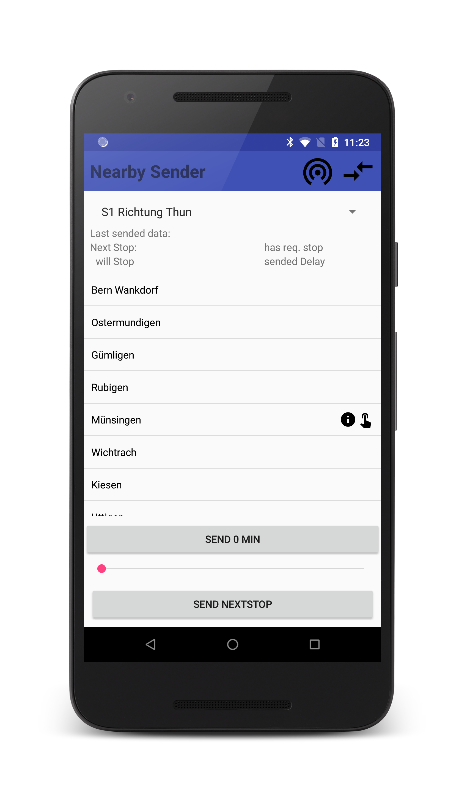
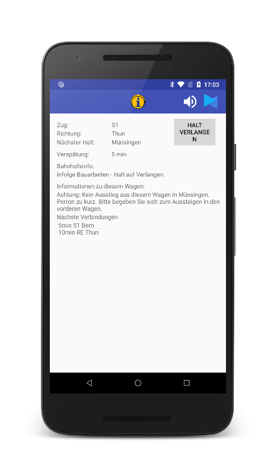

Nearby Information System
Auf dieser Website sind die wichtigsten Links zur Bachelor Thesis "Nearby Information System" zusammengefasst.


Sender-Applikation
Die Sender-Applikation enthält die verschiedenen Audiofragmente und die Informationen zum Zuglauf. Diese App sendet ein Signal aus, dass der Service zur Verfügung steht.
Empfänger-Applikation
Die Empfänger-Applikation enthält keine Audiodaten oder Zugsinformationen. Diese werden erst erhalten, wenn eine Verbindung zur Sender-Applikation hergestellt wurde. Im Gegensatz zur Sender-Applikation, kann die Empfänger-App auch im Hintergrund laufen und Informationen empfangen.
Bluetooth Messapp
Zur Messung der Bluetooth Signalstärke wurde ein App entwickelt. Diese muss auf zwei Geräten installiert werden und zeigt den RSSI-Wert zum Gegenüber an.